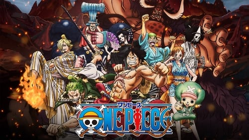
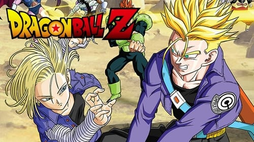
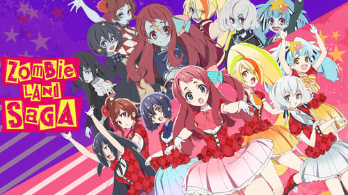
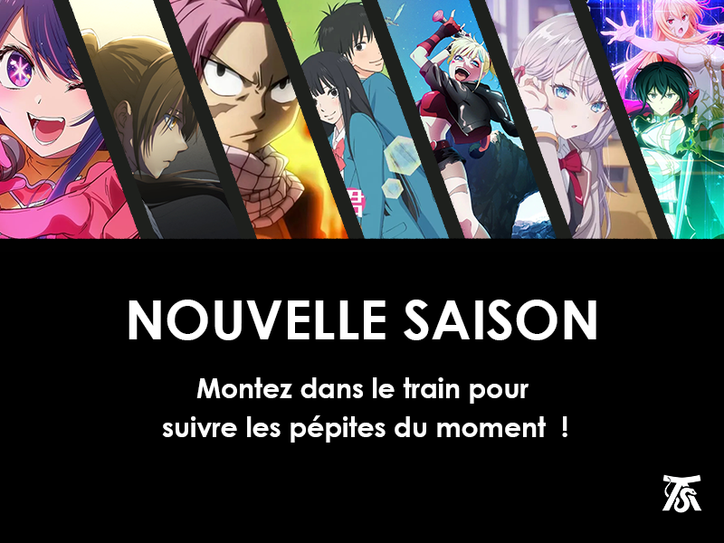

----------------------------------------
One Piece
Demon Slayer
My Hero Academia

----------------------------------------
Dragon Ball Z

----------------------------------------
Zombie Land Saga

Zetsuen no Tempest
Spice and Wolf (2008)
Yuusha: Yamemasu
KonoSuba
Kaiju N°8
